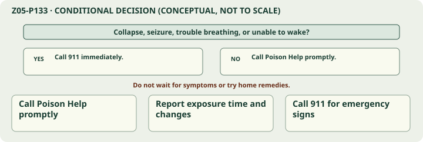

Z05-P133 · Wild foods and poisonous lookalikes · New manuscript
Suspected Mushroom Poisoning and Delayed Symptoms
Recognize that absence or improvement of symptoms cannot establish safety after suspected mushroom ingestion.
When it applies · Suspected wild mushroom ingestion in the U.S., including when the person feels well.
Equipment · Phone/911, Minnesota Poison Control 1-800-222-1222, clock to record exact ingestion time.

Actions
- Record the time of possible ingestion and any symptoms and call Poison Control promptly. Severe mushroom poisoning can have delayed symptoms.[B06, B09]
- Do not interpret a symptom-free interval or temporary improvement as recovery. Poison specialists assess the exposure using the clinical course and identity evidence.[B07, B09]
- Describe changes in condition to the poisoning specialist. Use 911 for collapse, seizures, difficulty breathing or inability to wake. Do not try to identify a toxin from the timing alone.[M15, B09]
Failure recognition · Waiting for symptoms or treating temporary improvement as clearance can delay care.[B06, B07, B09]
Verify · Get the appropriate help promptly. Report the suspected exposure time and symptom changes if known.[B09, M15]
Stop or change course · Call Poison Help promptly after suspected ingestion. Call 911 for collapse, seizure, difficulty breathing or inability to wake.[B09, M15]
Evidence and editorial notes
- B06 · CDC MMWR · Notes from the Field: Severe Mushroom Poisoning — Minnesota 2018 (MMWR 68(21))
- Section: 2018 incident and cited 2006 Minnesota outbreak · Conditions: Minnesota case evidence from distinct incidents
Support: The 2018 report describes A. muscaria intoxication. It separately cites a 2006 Minnesota outbreak involving A. bisporigera and amatoxin.
Limitations: Do not conflate the clinical syndromes, use the reports to identify a specimen, or infer a reliable symptom clock. · Conflicting evidence: Conditions are recorded in the A03 audit.
Editorial note: Critical Minnesota fungal hazard evidence. · Specialist reviewer: Medical toxicologist and mycologist
Primary source · checked 2026-11-25 - B07 · CDC MMWR · Amanita phalloides Mushroom Poisonings — 2026 Outbreak Report (MMWR 75(20))
- Section: Amanita phalloides outbreak and amatoxin lethality (MMWR 75:20) · Conditions: Recognizing lethal Amanita lookalike risk and cooking myths
Support: Amatoxins in death cap and destroying angel species survive boiling, freezing, and drying; misidentification causes acute liver failure and death.
Limitations: Never rely on folklore tests, boiling, peeling, or visual similarity to safe regional species. · Conflicting evidence: None noted.
Editorial note: Prohibits boiling/peeling mushroom myths. · Specialist reviewer: Medical toxicologist and mycologist
Primary source · checked 2026-11-25 - B09 · National Capital Poison Center · First Aid for Poisonings (Current web edition)
- Section: When to call 911; get help from poison experts · Conditions: Suspected poisoning in the United States
Support: Call 911 for collapse, seizure, trouble breathing or inability to wake. Otherwise promptly call Poison Help at 1-800-222-1222.
Limitations: Use route- and substance-specific advice. Do not wait for symptoms or collect unknown material if doing so risks exposure or delays care. · Conflicting evidence: Conditions are recorded in the A03 audit.
Editorial note: Mandatory Z05 poison-response escalation. · Specialist reviewer: Clinical toxicologist / Poison Center
Primary source · checked 2026-11-25 - M15 · National Capital Poison Center · First Aid for Poisonings (Current web edition)
- Section: First aid for swallowed, inhaled, skin and eye exposure; when to call 911 · Conditions: Suspected poisoning in the U.S.
Support: For collapse, seizure, breathing trouble or inability to wake call 911. Otherwise get timely poison-center advice. Do not induce vomiting.
Limitations: Substance and route determine immediate care. Keep rescuers away from contaminated scenes. · Conflicting evidence: See A02 claim audit for boundaries.
Editorial note: Separates 911 life-threat activation from Poison Control guidance. · Specialist reviewer: Medical toxicology and poison control
Primary source · checked 2026-11-25
Source lineage · New manuscript (Z05 P19-C clinical toxicology) · Classification · New manuscript.